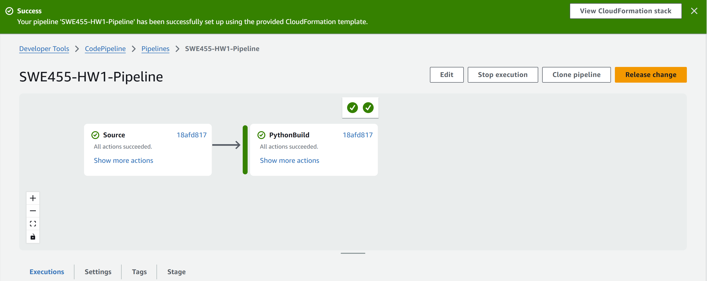

Task 1: Application Development
For this project, I developed a simple Flask web application that serves as both the application itself and the documentation platform. The tech stack includes:
- Flask - Python web framework
- Tailwind CSS - For styling and responsive design
Task 2: Cloud Deployment
Platform Selection
I chose Amazon Web Services (AWS) for deploying this application. The deployment process involved:
- Setting up an AWS account and configuring IAM permissions
- Creating a CodePipeline for continuous integration and deployment
- Configuring Elastic Beanstalk environment for the Flask application
- Setting up auto-scaling and environment variables
- Deploying the application through the pipeline
Deployment Process
The deployment was implemented using AWS CodePipeline with the following stages:
- Source: Connected to GitHub repository
- Build: Used AWS CodeBuild with buildspec.yml configuration
- Deploy: Deployed to Elastic Beanstalk environment
CodePipeline Setup

Successful Deployment
Task 3: Scalability and Monitoring
Auto-scaling Configuration
The application is configured to automatically scale based on traffic using AWS Elastic Beanstalk's auto-scaling capabilities:
- Minimum instances: 2
- Maximum instances: 5
- Scaling triggers: CPU utilization > 70%
- Scale down when CPU utilization < 30%
- Breach duration: 5 minutes (300 seconds)
The auto-scaling configuration is defined in the .ebextensions/python.config file:
aws:autoscaling:asg: MinSize: 2 MaxSize: 5 aws:autoscaling:trigger: MeasureName: CPUUtilization Statistic: Average Unit: Percent Period: 300 BreachDuration: 300 UpperThreshold: 70 LowerThreshold: 30 UpperBreachScaleIncrement: 1 LowerBreachScaleIncrement: -1
Monitoring Setup
Monitoring has been implemented using AWS CloudWatch, which provides:
- CPU utilization metrics
- Memory usage tracking
- Request count and latency
- Error rate monitoring
CloudWatch Monitoring Dashboard
Screenshots of CloudWatch metrics will be added here after deployment
Challenges and Solutions
Challenge 1: CodePipeline Configuration
During the initial setup of the CodePipeline, I encountered issues with the source stage configuration. The pipeline was not detecting changes in the GitHub repository.
Solution: I reconfigured the webhook settings in GitHub and ensured that the correct IAM permissions were set up for the CodePipeline service role. This resolved the issue and allowed the pipeline to properly detect repository changes.
Challenge 2: Elastic Beanstalk Environment Configuration
The initial deployment to Elastic Beanstalk failed because the application wasn't properly recognizing the WSGI application entry point.
Solution: I added the proper configuration in the .ebextensions/python.config file to specify the WSGI path as app:app, which correctly pointed to the Flask application instance in the app.py file.
Challenge 3: Auto-scaling Configuration
Setting up the auto-scaling configuration was challenging as I needed to determine the appropriate thresholds for scaling up and down.
Solution: After researching AWS best practices, I configured the auto-scaling to use CPU utilization as the primary metric with appropriate thresholds (70% for scaling up, 30% for scaling down) and a breach duration of 5 minutes to avoid unnecessary scaling events due to temporary spikes.